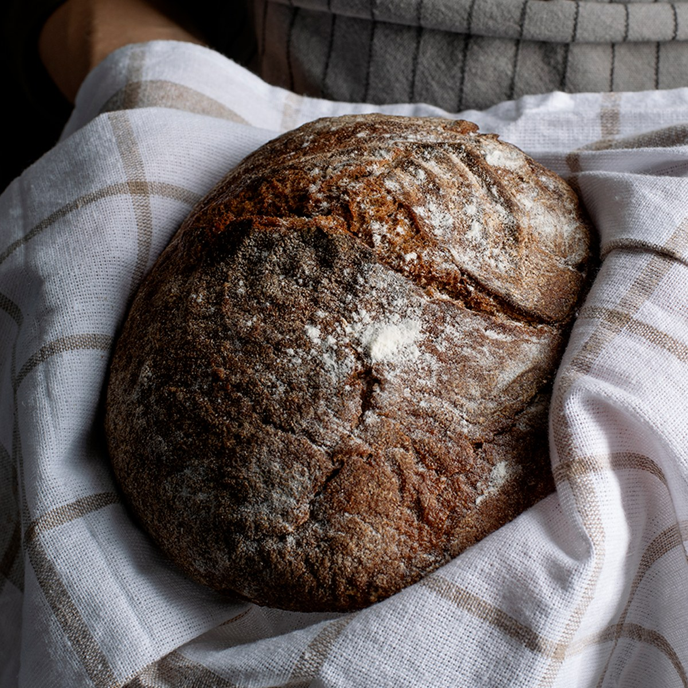
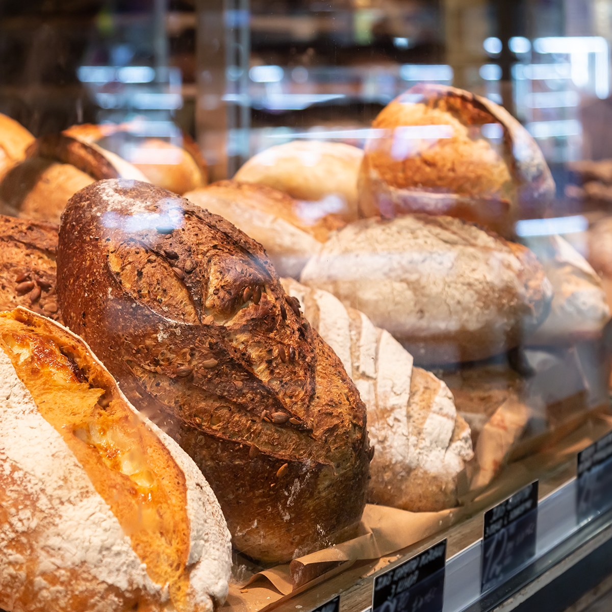

Our Products
Everything at North Star Bakery is made by hand in small batches. Prices are listed as ranges because they vary by size and flavor. There is no online checkout: send us a pre-order request and we will confirm by email.
Our Signature Loaf

This is the loaf that started it all. It is chewy, nutty, and wonderful toasted with butter. Price range: $8–$10.
Breads

Sourdough and Country Loaves
Crusty, tangy, and baked fresh each morning. Price range: $7–$10.
Seeded and Whole-Grain Breads
Topped with sunflower, flax, and pumpkin seeds. Price range: $8–$11.
Dinner Rolls
Soft, buttery rolls sold by the half dozen or dozen. Price range: $6–$12.
Pastries and Cookies
Morning Pastries
Croissants, cinnamon twists, and seasonal fruit pastries. Price range: $3.50–$5.50 each.
Cookies
Chocolate chunk, sugar-dusted, and iced shortbread, sold individually or by the box. Price range: $2.50–$3.50 each; boxes of six $14–$18.
Cakes and Special Orders
Celebration Cakes
Custom 6-inch to 10-inch cakes for birthdays, showers, and more. Price range: $35–$85. Please allow 72 hours.
Event Platters
Bread baskets, pastry trays, and cookie platters for meetings and gatherings. Price range: $40–$150.